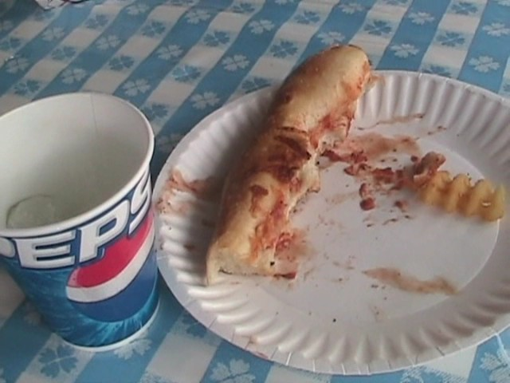

Knoebels is one of those amusement parks that doesn't look like anything special and not worth checking out, but you get here and it's an AMAZING PARK!! Now unfortunetly, my time at Knoebels was extremely limited since I only had 2 hours to spend at this park. So that made me miss out on a lot that this park has to offer. But from that limited time, I did experience enough to say this. KNOEBELS KICKS MAJOR ASS!!!!!! This is not like a typical amusement park where only the roller coasters matter and everything else is just a bonus. At Knoebels, everything matters. From the coasters to the flat rides to the food, it is all important at Knoebels. Not many parks in America really have a feel like Knoebels does. It's far more similar to your typical European Theme Park than your typical American Theme Park. Knoebels definetly has a family feel to the park and a lot of the stuff in the park have a home made feel to it. Hell, a couple of the flat rides really are home made. But most importantly, Knoebels cares about the quality of everything in their park. Everything at Knoebels is of high quality and is an enjoyable experience. And to top it all off, Knoebels is actually a really cheap park. Park Admission is free, and tickets for the rides are actually really cheap!!! Hell, sometimes, it's actually cheaper to just pay for each individual ride instead of getting the wristbands. That really says a lot about Knoebels. It's a great park with great rides at a great price. What more do you want.
There is a link to a review of all the Rollercoasters at Knoebels.
(Please keep in mind that there is no review of Black Diamond, Flying Turns, or Impulse because it either didn't exist when I last visited or it was STILL under construction.)
Here are the reviews of all the Flat Rides at Knoebels. Now Knoebel's flat ride collection is very interesting. All the flat rides here actually mean something. Either it's a rare unique flat ride, it's one of the best of it's kind, or it's just a clone of an already great flat ride. So as you can see, Knoebel's flat ride collection is definetly worthy of an A+. However, a lot of what I said about being the best of their type, I can't verify. For because of my extremely limited time, I wasn't able to get much done at Knoebels in the flat ride department. Out of all the many many flat rides that Knoebels has to offer, I was only able to actually ride two of them. First up, is Looper. Now Looper, is a squirrel cages looping ride. While it's extremely popular in Japan, they are incredibly rare in America. So for now, it's a very unique experience. Now unique doesn't always mean high quality, and that is true in Looper. It's a very intersting experience. You sit in a cage, only held in by a seatbelt. At first, you just spin, and you can't touch the pedal. About a minute into the ride, you can press the pedals. Now you're probably asking "What do the pedals do?" Well, you flip the ride by using the pedals. Yep. It's a manual ride. You have to make yourself go upsidedown. And it's not very easy. Not easy at all (This is probably why it's not popular in America). While I've seen many people get the hang of it and flip like crazy, I always went up 179 degrees, and then fell back down. But what really annoyed me on Looper, were the restraints. Now, I'm very glad that it just had a seatbelt and not OTSRs. That's a big plus in my book. However, when you're trying to get upsidedown, you sort of hang there sometimes. And just let me say this. Having all your weight on your thighs hurts. But nevertheless, it's a very fun ride and is something that I would recommend you try if you're at Knoebels. Now, the only other flat ride I managed to do while at Knoebels is Power Surge. Now Power Surge, unlike Looper, is a fairly common flat ride in America. Many parks here have Power Surges. However, with that said, this is a very fun flat ride. It's very intense, can flip you around quite a lot, and your thighs don't even hurt in the slightest bit. =) So all I really have to say about Power Surge is that if you've never ridden one before, DO IT!!!!!!! If you have been on a Power Surge, judge for yourself based on how you liked your last Power Surge ride, how much time you have at Knoebels, and how important it is to you. While that concludes all the flat rides that I did at Knoebels, there are MANY MANY more flat rides at Knoebels that I did not do. First off, they have Flyers. Now from what I heard, Knoebels has the best flyers around. I can't verify this, all I know is that I really wished I had done this to see if it's true. Next up is called Downdraft. I really have no idea what this flat ride is like, all I know is that it looked REALLY cool. The carousel at Knoebels is still one of the few carousels in the world left where you can still catch the golden ring. And from the videos I've seen of their bumper cars, they look like the best bumper cars ever since A: No Idiotic One Way Rules. and B: The cars are made of fiberglass, so when you bump into someone, you get a much bigger reaction. And while their falling star may seem like an ordiary falling star, it's actually married. So if you've ridden their falling star, you've commited adultery. Aside from these, Knoebels also has a frisbee, a Roll-O Plane, an indoor music express, a whip, a wipeout, a round up, a pirate ship, some chairswings, a paratrooper, a tilt a whirl, a scramler, a spiral slide, some teacups, a ferris wheel, and a rockin tug.
Here are the legendary flyers at Knoebels.
Here is the incredibly rare Looper.
And here is Power Surge. While common, it's still very fun (As you can see).
Dark Rides
Knoebels doesn't really have much of a dark ride collection. They only have one dark ride there. And it's an upcharge. So obviously, I didn't do it due to my limited time. It's a haunted house. But from what I've heard from other people, it's a pretty good haunted house and is worth the extra money. So you can either trust those who praise it and pay and ride, or you can be cheap and not ride it for a couple bucks. Your call.
Water Rides
I never rode any of the water rides at Knoebels. But from what I saw, none of what they have is special. All I saw was a log flume, and a shoot the chutes. These are fairly common flat rides and I don't think missing these was a big deal. But hey. This is Knoebels. So there could very well be some hidden charm in these ordinary water rides that I just can't see right now.
Dining
As I have already mentioned before, Knoebels kicks ass in the food department. All the food here is of really really high quality and is very delicous. But what I think is the most famous food at Knoebels is Cesari's Pizza. Everyone who goes to Knoebels talks very highly about Cesaris Pizza (Well, almost everybody). So naturally, I ate here. While I personally can't say that it was amazing and fantastic, I can say this. It's much better than typical amusement park crap pizza. And that, is what is most important of all. So while it may be overrated in that it's not extrordinarily good pizza, it is better than average. And it's not like the only thing at Knoebels is Cesaris Pizza. They have tons of other stuff that I look foreword to trying when I go back. Knoebels seems like the type of park where you shouldn't get a meal, but rather just snack your way through the park to try all that they have. And that's not even the best part of all of this. IT'S ACTUALLY CHEAP!!!!!! =O My meal at Cesaris Pizza, which included a slice of pizza, some criss cut fries, and a small Mtn Dew was only $3.75!!!!!! In Amusement Park Food Price Terms, that's like f*cking stealing!!! Usually, a meal like that at a normal theme park would be a Pizza Combo for $11.99, and the Pizza would be crap compared to Cesaris. And that's actually decent for Amusement Park Food Prices (You don't want to look at what it's like when it gets bad like this or this). So don't be afraid to go nuts!!! This place is cheap!!!! So yeah. Knoebels exceeds with flying colors in the food department. A+

This is all that was left of my pizza by the time I remembered to put a photo of it in the update.
Theming and Other Attractions
Here are the reviews of all the other stuff at Knoebels. Well, as far as theming goes, Knoebels really doesn't have much. It's mostly a campground amusement park in the middle of freaking nowhere. Not much theming except for Pennsylvania Forests are seen here. But really Knoebels doesn't really need much theming. The park's campground atmosphere fits the park perfectly and is lovely. You really don't need to theme Knoebels as it's not the type of park where theming would even look good. But Knoebels still has some interesting theming. They have the Bread Building, which is a building shaped like a loaf of bread. I'm not sure if it's a symbol that the park makes their own bread or if it's just there for the hell of it, but either way, I like it and really think it contributes to Knoebel's quirky atmosphere. That's all of Knoebel's theming that I saw. There might be more, I'll just have to go back and see. I'm not exactly sure what other things they have at Knoebels. But like I always say, research it!!! I think Knoebels has a swimming pool. So if you like to go swimming, keep that in mind. And considering the type of park Knoebels is, I'd expect you'd be able to find a lot of different stuff to do.
There's the building shaped like a loaf of bread.
In Conclusion
Knoebels is a FANTASTIC theme park. I love everything about this theme park. They have high quality wooden coasters, some of which are even Top 10 worthy, fantastic flat rides, cheap delicous food, and a nice woodsy atomsphere that just screams "FUN!!!!!!!!". Knoebels knows how to keep it's customers happy and how to make a theme park just plain fun for everyone. My only real problem with my visit was the time limit. This park is simply worth FAR more time than 2 hours. But even so, I'm just glad I got to go to this awesome park as well. And when compared to other groups on the tour, I got on a lot since my group was the only group that had time to get on any flat rides at all. But yeah. Come to Knoebels. This park kicks ass, and is extremely cheap!!! Cheap Food, Cheap Tickets, It's just cheap, only with a high quality feel to it. One of the best deals you can find in amusement parks.
Enthusiast FAQs.
*Are there kiddy coaster restrictions? - No. Kozmo's Curves has no restrictions for adults.
Tips
*Don't get lost when trying to get to Knoebels (The roads around the area are VERY confusing).
*Always carry a park map so you don't get lost once you are inside Knoebels (Knoebels has a VERY confusing park layout).
*Don't automatically assume the All Day Wristband is the cheaper option (Tickets here are VERY cheap).
*Spend A LOT of time at Knoebels (3 hours BARE MINIMUM, Full Day Recommended).
*Check out all the rare and unique flat rides (Knoebels IS NOT a credit whoring stop).
*If you ride the Falling Star, prepare to become an adulterist (It's a married ride).
*Snack your way around the park (The food is both incredibly good and incredibly cheap).


{kind=link}
{kind=link}